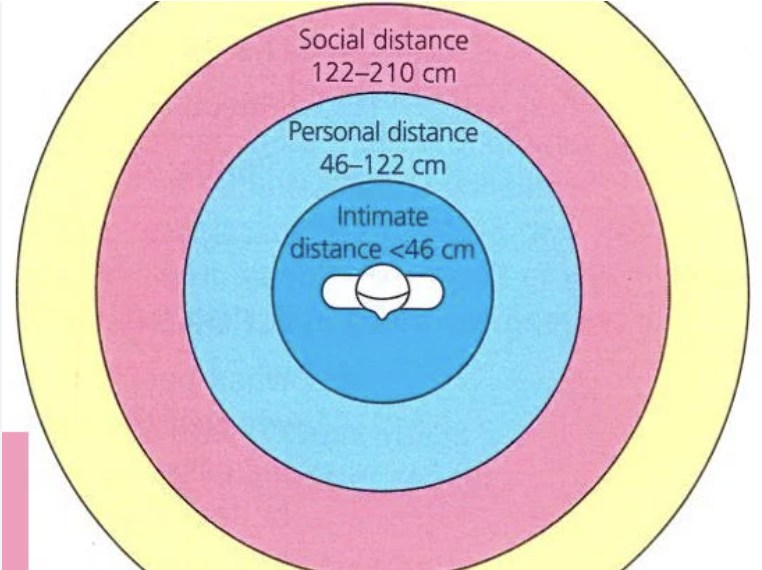
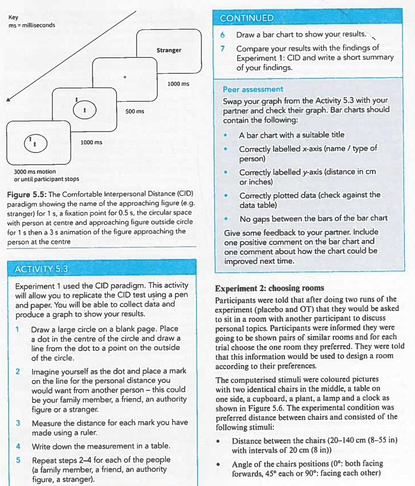
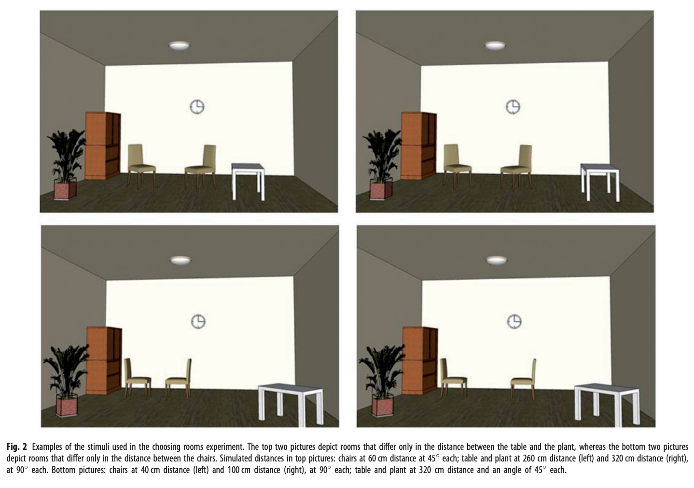
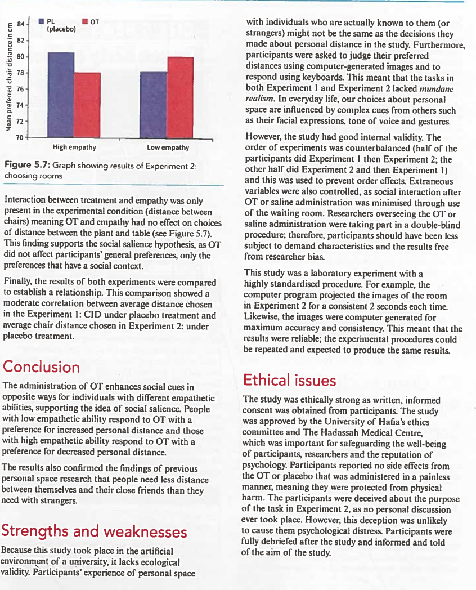

CIE Psychology / Social Approach（社会心理学取向） / 个人空间与催产素
Interpersonal distance （人际距离/个人空间） is an essential part of any social interactions. When we stand farther away from someone than expected, this sends a signal that we feel uncomfortable and less responsive. On the other hand, if we leave too little personal space, then the other person may feel uncomfortable or even threatened.
interpersonal distance (personal space) （人际距离/个人空间）: The relative distance between people. It is the area of space around a person in which they prefer not to have others enter. It is like a bubble that moves with the person. This bubble may be larger or smaller depending on the social situation the person is in.

Edward T. Hall 在 1966 年提出了四种个人空间距离，基于中产阶级美国人的偏好：Intimate distance（亲密距离，用于伴侣或非常亲近的家人，涉及所有感官）、Personal distance（个人距离，日常社交互动中能看到、听到对方）、Social distance（社交距离，正式互动中使用更大声音和肢体语言）、Public distance（公共距离，远离公众人物如演讲者时使用）。这个"气泡"会随着人移动，大小因情境而异。
The requirements humans have for personal space have been of great interest to social psychologists. Often we choose interpersonal distances based on our relationship to the person with whom we are interacting.
There are several factors that have been found to influence personal space requirements, in addition to how well we know the other person. Some of these factors are situational, such as culture (Beaulieu, 2004). Research has shown that different culture types show different personal space requirements; in no-contact cultures people touch less and stand further apart.
Psychologists are interested in testing other factors that may influence personal space behaviour. One such factor is the social hormone known as oxytocin （催产素）, which helps regulate social thinking and behaviour in humans and animals. OT can affect individuals in different ways depending on their situation, individual attributes and culture. This means that as well as being associated with helping behaviour and empathy, OT has also been linked to lack of cooperation with out-groups and jealousy.
Oxytocin（催产素）是一种社会激素。你可能听说过它是"爱的激素"，因为它在拥抱、亲吻时会分泌，促进亲密关系。但研究发现 OT 的作用比这更复杂——它不仅让我们更愿意帮助别人，也可能让我们对"外人"更不合作。Perry 等人的研究就是想弄清楚 OT 如何影响我们与他人保持的距离。Empathy（共情能力）是指站在他人角度理解感受的能力——有些人天生共情能力强（容易体会别人的情绪），有些人较弱。
Perry et al. were interested in investigating how people's personal space preferences are affected by a few different factors. One of these is interpersonal distance; so they measured people's preferences for different social figures so they could compare how close people want to be to strangers or friends, for example. Perry et al. believed this preference could be influenced by the action of social hormones on individuals' preferences, so they also looked at the effect of OT.
Specifically, Perry et al. tested whether people with different empathy abilities were influenced by OT in the same or different ways when asked about their personal space preferences. In psychology this is known as an interaction effect （交互效应）, and the interaction between variables is represented by an '×', e.g. OT × empathy × condition.
Research suggests that empathy is an innate capacity, meaning that individuals are born with the ability to understand the thoughts and feelings of those around them. This relates to the nature side of the nature–nurture debate. However, this capacity is developed over time through interactions with others, for example between children and their parents. Through nurture, individuals develop empathy as they learn to identify and regulate their emotions.
共情到底是天生的还是后天培养的？Nature vs nurture 的经典争论。大多数人认为两者都有——我们有天生的基础，但通过后天经历（尤其是与父母的互动）不断发展这种能力。
The aim of this study was to test the differential effect of the social hormone oxytocin (OT) on personal space preference in relation to a person's empathy ability. The researchers believed that controlling for empathic traits in individual participants would reveal the effect of OT on interpersonal distance choices. Perry et al. wanted to find out whether highly empathic individuals would prefer closer distances while low empathy individuals would prefer greater interpersonal distances when given OT.
This study was a laboratory experiment （实验室实验） conducted at the University of Haifa. This means it took place in an artificial environment. It used a mixed experimental design （混合实验设计） to allocate participants.
In both Experiments 1 and 2, the study used an independent groups design for the IV of 'empathy'. This IV was operationalised as two levels: 'high' or 'low'. Participants were categorised into different groups and could only be either a 'high empathiser' or 'low empathiser'. This IV was naturally occurring and was not manipulated by the researchers.
In both Experiments 1 and 2, the study used a repeated measures design, as all of the participants took part in both levels of the second IV of 'treatment'. The IV of treatment was operationalised in the experiment as: OT administered or placebo administered. This IV was manipulated by the researchers.
In Experiment 1 only there was a third IV known as 'condition'. This was also a repeated measures design and included the levels stranger, authority, friend and ball. There was no third IV in Experiment 2 as the participant was always asked to imagine their personal space in relation to the same person. This means there was no manipulation of this part of Experiment 2.
The dependent variable (DV) was the personal space requirements of each participant. In Experiment 1, the DV was operationalised as the preferred distance measured between participant and approaching person/object. In Experiment 2 the DV was operationalised as preferred distance and angle between two chairs in a room.
Experimental design is the way in which participants in an experiment are allocated to the level(s) of the IV. A study that uses both an independent measures design and a repeated measures design can be described as 'mixed' （混合设计）.
这个研究用了混合设计（mixed design），意思是同时用了两种不同的设计方式：
· "Empathy" 这个自变量用的是独立组设计（被试只能属于高共情组或低共情组，不能两者都是）；
· "Treatment"（OT 或安慰剂）用了重复测量设计（每个被试都做了两次，一次用 OT，一次用安慰剂）。
这在心理学研究中很常见——有些变量你没法操控（比如一个人的性格），就只能自然分组；有些变量你可以操控（比如给药），就让所有人都体验一遍。
54 male undergraduates from the University of Haifa, aged 19–32 years (mean age 25.29), participated in this experiment for course credit or payment. All participants had normal vision and no history of psychiatric or neurological disorders. Five participants were left-handed. Participants were divided into two groups based on their scores on the Interpersonal Reactivity Index (IRI), a 28-item self-report measure with four 7-item subscales all relating to empathy.
The High Interpersonal Reactivity group contained 20 participants with empathy scores greater than or equal to 40 and a mean age of 23.9 years. The Low Interpersonal Reactivity group contained 20 participants with empathy scores below 33 and a mean age of 25.9 years.
Double-blind （双盲法）: Refers to an experimental procedure in which neither the participant nor the researcher are aware of which condition the participant is in, to prevent demand characteristics and act as a control to improve the validity of any data collected.
Counterbalancing （平衡法）: Is a technique used to overcome order effects in a repeated measures design. Each possible order of levels of the IV is performed by a different sub-group of participants. This can be described as an ABBA design, as half the participants do condition A then B, and half to B then A.
Participants attended the university in order to complete Experiment 1 and then again, a week later on the same day and time to complete Experiment 2.
Participants were randomly administered a treatment of either a solution of 24 international units in 250 ml of intranasal OT or a placebo saline solution which did not contain the hormone. The nasal drops were self-administered by participants using a nasal dropper, under the supervision of the experimenter. The procedure used the double-blind technique （双盲技术）; neither the participant nor experimenter knew whether the participant had received the OT or saline solution.
After the solution was administered, participants completed the IRI online questionnaire. After completing this, participants were given nature magazines and waited in a quiet room for 45 minutes. The order of the experiments was counterbalanced, meaning that half the participants were undertaken OT one week then saline the next week, and the other half first took saline on their first week and OT on their second.
This experiment used a modified version of an older, paper-based interpersonal space test known as the Comfortable Interpersonal Distance (CID) paradigm as shown in Figure 5.5. A circle was presented on a computer screen and participants were instructed to imagine themselves in the centre of the room with another person approaching them along a radius. The participant had to indicate by pressing the keyboard space bar at the point along the radius where they would want the person to stop their approach. The computer animation had options for the imagined other to be one of the following conditions: a close friend, stranger, authority figure or a rolling ball. The animation stopped when the figures collided or the participant pressed the space bar. There were 24 trials for each figure and 96 trials in total. The researchers recorded the percentage of remaining distance from the total distance.

radius （半径）: A straight line from any point on the circumference of a circle to the centre of the circle.
Participants were told that after doing two runs of the experiment (placebo and OT) that they would be asked to sit in a room with another participant to discuss personal topics. Participants were informed they were going to be shown pairs of similar rooms and for each trial choose the one room they preferred. They were told that this information would be used to design a room according to their preferences.
The computerised stimuli were coloured pictures with two identical chairs in the middle, a table on one side, a cupboard, a plant, a lamp and a clock as shown in Figure 5.6. The experimental condition was preferred distance between chairs and consisted of the following stimuli:

The control condition was preferred distance between table and plant and consisted of the following stimuli:
The experiment included 21 different pairs of chair distances, 21 different pairs of table-plant differences and three options for each pair of angles, repeated seven times to equal 21 pairs for comparative angles. Each participant was shown a total of 84 pairs, each repeated twice to equal 168 pairs overall.
The 2 picture sets were shown on a computer screen for 2 seconds and the participant had to select their preference. The mean preferred distance between chairs, between table and plant and the preferred angle for these furniture pairs was calculated.
There were three IVs manipulated in Experiment 1: condition, treatment and empathy. The dependent variable of preferred distance was presented by Perry et al. as a mean percentage distance from the centre of the circle where the participant imagined themselves. A higher percentage means participants preferred a greater personal distance.
For Experiment 1: CID, there were differences found between preferred distances between stranger, authority, ball and friend (see Table 5.2) across all trials. This finding supports the idea that participants' need for personal distance increases the less well the approaching figure is known to them.
| Stranger | Authority | Ball | Friend |
|---|---|---|---|
| 39.82% | 34.12% | 20.20% | 12.46% |
表 5.2 清楚地显示：陌生人 > 权威人物 > 球 > 朋友。人们最想离陌生人远一点（39.82%），最愿意让朋友靠近（12.46%）。球作为无生命的控制条件排在中间偏下。这说明我们对熟悉的人需要更小的个人空间，完全符合 Hall 的理论预期。
OT was found to decrease the mean preferred distance from participant to other in the high empathy group but had the opposite effect in the low empathy group. This finding is shown in Table 5.3. The effect of OT on the low empathy group was to increase the preferred distance between self and other. This finding suggests that the administration of OT has a differential effect rather than the same effect on high and low empathisers.
| Oxytocin (OT) group | Control group (placebo) | |
|---|---|---|
| High empathy group | 23.29% | 26.11% |
| Low empathy group | 30.20% | 26.98% |
这是本研究最重要的发现之一！看表 5.3：
· 高共情组：OT 组（23.29%）< 安慰剂组（26.11%）→ 用了 OT 后，高共情的人愿意让别人靠得更近！
· 低共情组：OT 组（30.20%）> 安慰剂组（26.98%）→ 用了 OT 后，低共情的人反而想让别人离得更远！
这说明 OT 对人际距离的影响取决于你的共情水平——这就是所谓的 differential effect（差异化效应） 和 interaction effect（交互效应）。
There was also an interaction between the IVs of treatment, condition and empathy (see Table 5.4). With the placebo, high empathisers showed statistically significant differences between preferred distances from friend and authority, as well as friend and stranger. With OT, the same differences appeared, but there were also significant differences between ball and stranger and ball and authority. This finding could indicate that the ball is an invitation to social interaction, a cue which is enhanced with the treatment of OT for high empathisers.
| Oxytocin (OT) group | Control group (placebo) | |
|---|---|---|
| Stranger | 39.73% | 38.55% |
| Authority | 30.55% | 33.92% |
| Ball | 14.42% | 20.96% |
| Friend | 8.49% | 11.02% |
For Experiment 2: choosing rooms, there were no differences in preferences for chair distance but not for chosen angles. Participants in the high empathy group chose closer chair distances following OT administration than placebo administration. OT administration had the opposite effect for those participants in the low empathy group (see Table 5.5).
| Oxytocin (OT) group | Control group (placebo) | |
|---|---|---|
| High empathy group | 78.07 cm (30.74 in) | 80.58 cm (31.72 in) |
| Low empathy group | 80.14 cm (31.55 in) | 78.33 cm (30.84 in) |

实验二的结果再次验证了实验一的核心发现：
· 高共情 + OT → 选择更近的距离（78.07 cm vs 80.58 cm）
· 低共情 + OT → 选择更远的距离（80.14 cm vs 78.33 cm）
两个实验互相印证，说明这个发现不是偶然的！而且注意，OT 只影响了椅子之间的距离（社交相关的），没有影响桌子和植物之间的距离（非社交的），这说明 OT 特异性地调节了对社会信息（social salience）的关注。
Interaction between treatment and empathy was only present in the experimental condition (distance between chairs) meaning OT and empathy had no effect on choices of distance between the plant and table (see Figure 5.7). This finding supports the social salience hypothesis, as OT did not affect participants' general preferences, only preferences that have a social context.
The administration of OT enhances social cues in opposite ways for individuals with different empathetic abilities, supporting the idea of social salience. People with low empathic ability respond to OT with a preference for increased personal distance and those with high empathic ability respond to OT with a preference for decreased personal distance.
The results also confirmed the findings of previous personal space research that people need less distance between themselves and their close friends than they need with strangers.
最大的弱点是缺乏生态效度。你在电脑屏幕上选一个"理想距离"和在真实生活中跟陌生人站多远完全是两回事。真实生活中我们会根据对方的表情、语气、肢体语言不断调整距离。不过，研究者用电脑程序的好处是高度标准化——每个人看到的刺激都一模一样，结果也更可靠。这是心理学实验的经典取舍：控制 vs 真实性。
The study was ethically strong as written; informed consent was obtained from participants. The study was approved by the University of Haifa's ethics committee and The Hadassah Medical Centre, which is important for safeguarding the well-being of participants, researchers and the reputation of psychology.
Participants reported no side effects from the OT or placebo that was administered in a painless manner, meaning they were protected from physical harm. The participants were deceived about the purpose of the task in Experiment 2, as no personal discussion ever took place. However, this deception was unlikely to cause them psychological distress. Participants were fully debriefed after the study and informed and told of the aim of the study.
伦理方面总体做得不错：有知情同意、伦理委员会批准、事后充分解释（debriefing）。唯一的小问题是 Experiment 2 中有轻微欺骗——告诉被试他们要和人讨论个人话题，但实际并没有。但研究者判断这不太可能造成心理困扰。另外，所有被试报告 OT 和安慰剂都没有副作用。
Perry et al.'s study considered the effects of OT on personal space choice and empathy. It used two laboratory experiments involving a computer simulation of comfortable personal distance and choice of rooms with different layouts. This laboratory experiment also used questionnaires to collect data. Both experiments found an interaction between the effect of OT, empathy and interpersonal distance preference. The findings suggest that OT enhances social cues to produce an opposite effect on individuals with different empathic abilities.
| Term | Definition |
|---|---|
| interpersonal distance / personal space （人际距离/个人空间） | The area of space around a person in which they prefer others not to enter. Varies with relationship and situation. |
| oxytocin (OT) （催产素） | A social hormone that influences social thinking, behaviour, and interpersonal distance preferences. |
| empathy （共情能力） | The ability to recognise and share the thoughts and feelings of another person. |
| social salience （社会显著性） | The importance or attention given to social cues such as body language and interpersonal distance. |
| social cues （社会线索） | Facial expressions or body language used to send messages to others (e.g., a smile). |
| interaction effect （交互效应） | When the combined effect of two or more variables differs from each variable acting alone. |
| differential effect （差异化效应） | Different individuals showing different outcomes when exposed to the same stimulus. |
| laboratory experiment （实验室实验） | An experiment conducted in a controlled, artificial environment with high control over variables. |
| mixed experimental design （混合实验设计） | A design combining independent groups design and repeated measures design within the same study. |
| independent groups design （独立组设计） | Different participants are allocated to each condition of the IV. |
| repeated measures design （重复测量设计） | All participants take part in all conditions of the IV. |
| double-blind （双盲法） | Neither participant nor researcher knows which condition the participant is in. |
| counterbalancing （平衡法） | Technique to overcome order effects in repeated measures designs (e.g., ABBA design). |
| operationalisation （操作化） | Defining a variable in terms of how it is measured in the study. |
| placebo （安慰剂） | An inactive substance used as a control in drug studies to account for expectancy effects. |
| CID (Comfortable Interpersonal Distance) （舒适人际距离） | A paradigm measuring preferred distance from an approaching figure on a computer screen. |
| IRI (Interpersonal Reactivity Index) （人际反应指数） | A 28-item self-report questionnaire measuring empathy levels. |
| ecological validity （生态效度） | The extent to which findings can be generalised to real-life settings. |
| mundane realism （现实真实性） | How closely the tasks in a study resemble real-world activities. |
| informed consent （知情同意） | Participants agreeing to take part after being given information about the study. |
| debriefing （事后解释） | Explaining the true purpose of the study after completion. |
| nature–nurture debate （先天-后天之争） | The debate about whether behaviour is determined by inherited factors (nature) or environmental influences (nurture). |